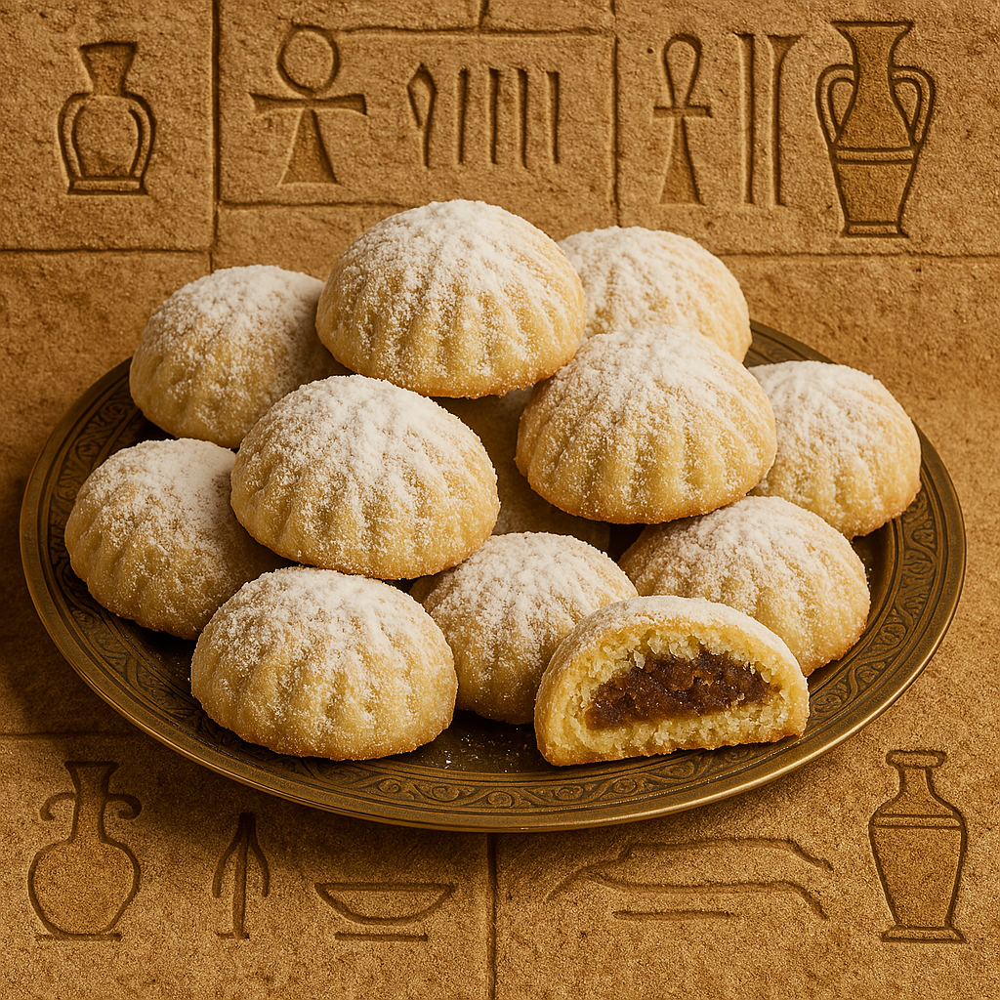

Traditional Eid Cookies with a Soft Crumb
Kahk is a buttery, crumbly cookie filled with dates, nuts, or agameya (honey-nut mix), then dusted generously with powdered sugar. A must-have on every Egyptian Eid table!
Ingredients:
- 1 kg flour
- 500g butter (melted)
- 1 tbsp yeast
- 1 tsp sugar
- 1 cup warm milk
- 1/2 tsp kahk spice (or cinnamon/nutmeg mix)
- Filling: agameya, dates, walnuts, or pistachios
- Powdered sugar for topping
Instructions:
- Mix yeast, sugar, and warm milk. Let it activate for 10 mins.
- In a large bowl, mix flour and kahk spice. Add melted butter and rub until it resembles crumbs.
- Add yeast mixture and knead into soft dough. Let it rest 30 mins.
- Shape into balls, fill each with your preferred filling, and press gently with kahk stamp (if available).
- Bake at 180°C (350°F) for 20–25 minutes until light golden.
- Cool completely and coat with powdered sugar.